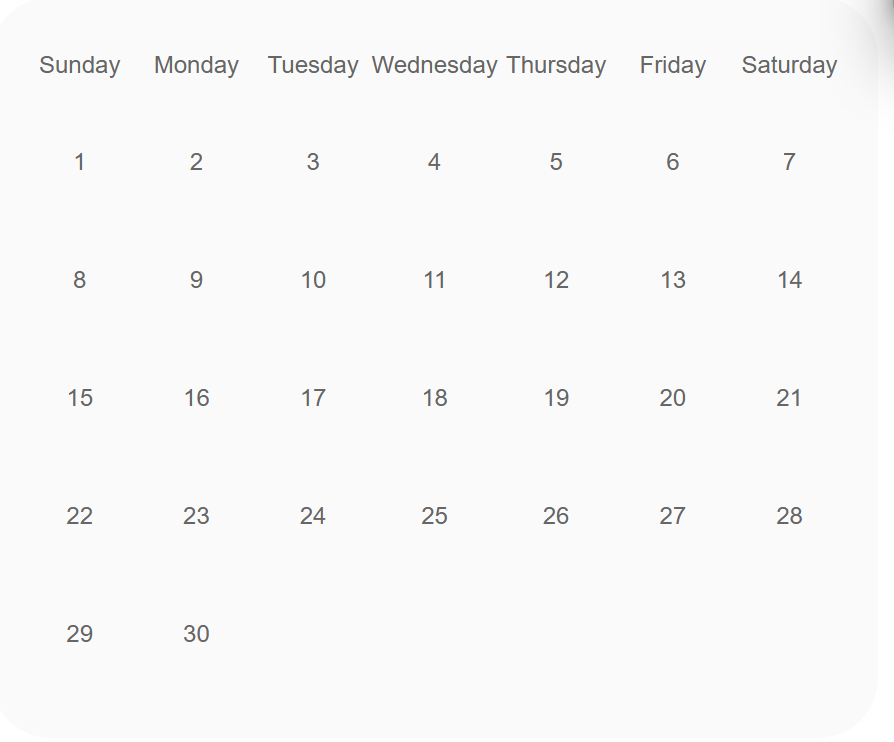

Manage you day with Task Management
Our site is designed for you stay organzied, manage your time well and improve productivity wether it be for work, at home or anyehere you must manage
Stay on top with due dates
Quickly all all your tasks in one view
Have as many tasks as you want
About us
SInce march of 2025 we were looking in to the big picture of creating a real life to do list. As You can see around the time of paper to do list are over. People are now opting to using phones and computers to work rather than paper. That is proabbly why you came across. So we thought the idea of digitalling the to do list for everyone to use on any device any time any where.